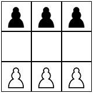
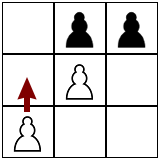
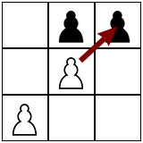

Machine Learning
-
Hexapawn is a turn-based game using six chess pawns on a \(3 \times 3\) board. White moves first. A piece can
either move forward if the space in front of it is empty, or capture an opponent's piece diagonally.
A player can win in 3 ways:
   • One of their pawns reaches the other sideHexapawn is a solved game, meaning we can calculate an optimal move from any position. Start by playing several games to get familiar, and see if you can "solve" the game before attempting the questions below.
• All of their opponent's pieces are captured
• It is their opponent's turn and there is no legal move- Is it possible to draw (tie) in hexapawn?
- Does one side have the advantage?
- What is the shortest game possible (fewest moves)?
- What is the longest game possible (most moves)?
- How many unique positions are possible after the first move (only white moves)?
- How many unique positions are possible after the first two moves (white moves then black moves)?
- Give an example of a position that is impossible to reach.
- If white's first move is to move their left-most pawn forward, then what is black's best response? What is black's worst response?
- If white's first move is to move their center pawn forward, then what is black's best response? What is black's worst response?
- How many unique games are possible? Here, a game is represented by a sequence of moves.
-
Browse to https://jedediyah.github.io/hexapawn/. Try playing a few games. Experiment with letting the machine play itself until it solves the game.
As the tree grows, there is more information recorded about the possible game outcomes. The machine is programmed to follow a path of least resistance when it moves. That is, it will make the move that leads to the least bad result in the tree at the time. The more games played, the more information is available so presumably the better the moves become.
- As the machine plays itself, how do you know when the game has been solved?
- What is the shortest game in the tree? What is the longest game in the tree?
- After letting the machine play itself until one side always wins, there are still several games in the tree where each side has won. So how is it that one side will always win now? In other words, why are some previously reachable results now un-reachable?
- Why doesn't the tree expand completely? In other words, why won't every possible game get played?
- Find a game that hasn't yet been recorded in the tree, and play it into the tree.
- Refresh the website, and start the machine playing itself again. Does it generate the same tree each time? What might it say about the algorithm if the tree is the same or different?
- Refresh the website. Running one Machine vs. Machine game at a time, use the blank chart to keep track
of the machine's score after each game. Each time black wins, the score increases by one. Each time white
wins, the score decreases by one. Play enough games to solve Hexapawn.
- How many games did it take before black always won?
- On average how many games does it take before black always wins? What was the fewest number of games required? The most? It might be useful to ask your classmates to share their data.
- How many wins total did white have?
- On average how many wins did white have? What was the fewest number of wins for white? The most?
- Read chapter 3, "Arms Race: Going to College", in Weapons of Math Destruction by Cathy O'Neil.